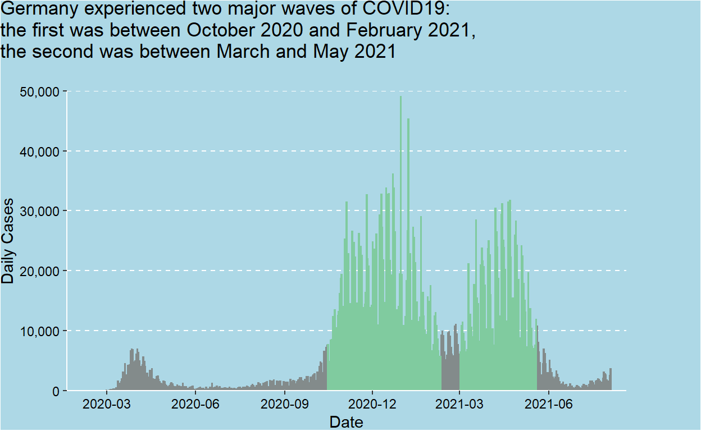

Exploring the impact of COVID19 in Germany
The data is sourced from the tidycovid19 R package created by Joachim Gassen on Github. The data in this package is collated from various sources and consists of the countries of the world and a multitude of variables that have been combined from the different data sources. For the purposes of this blogpost, the data has been filtered to Germany and the variables maintained are the following:
| variable | class | description |
|---|---|---|
| date | date | Calendar date |
| daily_confirmed | numeric | Daily increase in Covid-19 cases |
| acc_confirmed | numeric | Accumulated Covid-19 cases |
| daily_deaths | numeric | Daily increase in Covid-19 deaths |
| acc_deaths | numeric | Accumulated Covid-19 deaths |
| daily_recovered | numeric | Daily increase in Covid-19 recoveries |
| acc_recovered | numeric | Accumulated Covid-19 recoveries |
| daily_vaccinations | numeric | Daily increase in Covid-19 vaccinations |
| acc_vaccinations | numeric | Accumulated Covid-19 vaccinations |
| icu_patients | numeric | number of patients in ICU |
| income | factor | income level of the country |
| population | numeric | population of the country |

The figure shows that Germany experienced one minor wave in early 2020 and two major waves. The first major wave was between October 2020 and Febraury 2021, and the major second wave was between March and May 2021. The peak of the first wave was 49,044 cases per day, while the peak of the second wave was 31,721 cases per day.
The figure above shows that country in the high income category occupy the top of vaccination rates, however it is important to note that the majority of countries in Europe are high income countries. Gibraltar can be highlighted in particular as possessing a vaccination rate higher than 200% at 232%, this could indicate that Gibraltar not only administered the two required doses for most citizens, but might in fact started to provide booster shots.
The graph shows that Germany ramped it its vaccination efforts starting in early April 2021 with a peak of 1,427,070 vaccinations administered on June 9, 2021. As per Our World In Data, Germanys fully vaccinated rate currently stands at 62.3%.
The top two figures were combined with the figure showing the number of ICU patients to highlight how patient numbers increased in line with the number of COVID19 cases. Likewise, the number of ICU patients fell as the vaccine rate increased. This highlights the positive impact of the vaccines in preventing hospitalization to COVID19 as a minimum.
Joachim Gassen (2021). tidycovid19: Download, Tidy and Visualize Covid-19 Related Data. R package version 0.0.0.9000.
R Core Team (2021). R: A language and environment for statistical computing. R Foundation for Statistical Computing, Vienna, Austria. URL https://www.R-project.org/.
Wickham et al., (2019). Welcome to the tidyverse. Journal of Open Source Software, 4(43), 1686, https://doi.org/10.21105/joss.01686
Thomas Lin Pedersen (2020). patchwork: The Composer of Plots. R package version 1.1.1. https://CRAN.R-project.org/package=patchwork
Hannah Ritchie, Edouard Mathieu, Lucas Rods-Guirao, Cameron Appel, Charlie Giattino, Esteban Ortiz-Ospina, Joe Hasell, Bobbie Macdonald, Diana Beltekian and Max Roser (2020) - Coronavirus Pandemic (COVID-19). Published online at OurWorldInData.org. Retrieved from: https://ourworldindata.org/coronavirus [Online Resource]